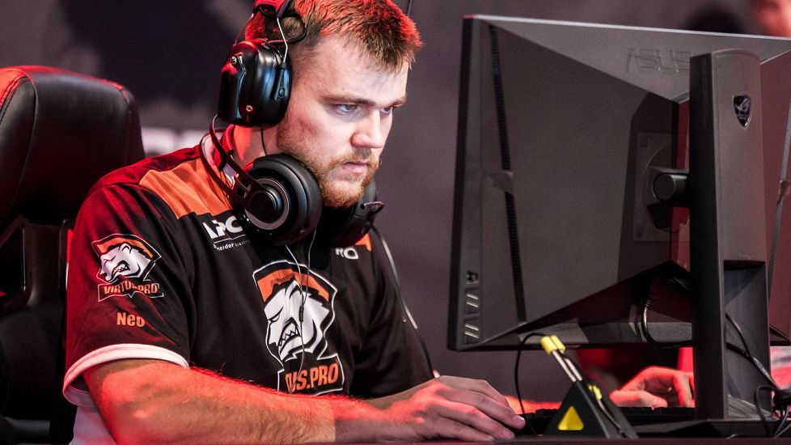

Filip "Neo" Kubski
Polski zawodowy gracz e-sportowy w grach serii Counter-Strike. Grę w Counter-Strike’a rozpoczął u boku swojego ojca, który grał dla zespołu Specnaz. W 2004 Specnaz i inna polska drużyna – Aristocracy połączyły swoje siły i stworzony został zespół Pentagram.conneXion. Wspólnie z zespołem, Neo został krajowym mistrzem 2004 World Cyber Games: Poland i 2005 World Cyber Games: Poland. W 2006 roku, wraz z zespołem wygrał główny turniej World Cyber Games 2006. W 2007 wygrał pierwszy turniej Intel Extreme Masters, a także Electronic Sports World Cup 2007 i ESL European Nations Championship. W kolejnych latach zmieniając zespoły wygrał m.in. World Cyber Games 2009 i 2011. W 2010 roku został wybrany przez czytelników serwisu hltv.org najlepszym graczem dekady. W 2011 wraz z ESC Gaming był ostatnim mistrzem świata w CS 1.6 na Intel Extreme Masters VI. W 2012 roku zaczął grać w nowo wydaną grę Counter-Strike: Global Offensive. 25 stycznia 2014 dołączył do zespołu Virtus.pro, z którym wygrał m.in. EMS One Katowice 2014, StarLadder i-League Invitational #1, E-League Season 2016 i DreamHack Bucharest. W grudniu 2018 rozstał się z Virtus.pro. W swojej karierze wygrał dotychczas indywidualnie ponad 750 000 dolarów amerykańskich w ramach nagród za zajmowane w turniejach miejsca i jest polskim graczem, który zarobił do tej pory najwięcej w grach z serii Counter Strike. Łącznie w karierze wygrał 66 oficjalnych turniejów, 35 razy był drugi i 49 razy kończył swój udział na półfinałach. Kilkukrotnie był wyróżniany miejscem w czołowej dwudziestce zestawienia najlepszych graczy roku według serwisu hltv.org, w tym w 2011 roku uzyskał 1. miejsce.